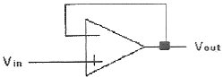
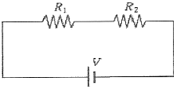
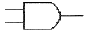
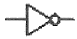
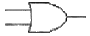
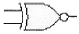

의료전자기능사 (2010-07-11 기출문제)
1과목: 임의 구분
1. 지방을 소화시키는 담즙을 생성하는 기관은?
- 비장
- 간
- 췌장
- 위
(정답률: 77%)

2. 심음(phonocardiogram)에 관한 설명으로 틀린 것은?
- 심음은 심장 근처의 가슴 벽에 청진기를 대거나 또는 귀를 직접 가슴에 대면 들을 수 있다.
- 심장의 에너지(심음)라는 전기적 현상을 기계적 에너지로 바꾸어 그래프화 한다.
- 심음은 심장판막의 열림과 닫힘, 혈액의 흐름, 심장벽의 진동으로 나타난다.
- 심음을 듣고 진담함으로써 심장의 상태를 파악할 수 있어서 질병의 진단에 이용하고 있다.
(정답률: 74%)
3. 호흡기 기능평가법에서 환기능(ventilation)에 대한 설명으로 옳은 것은?
- 폐 내에서 공기가 폐포 간에 균형 있게 분포하는 기능
- 외부공기가 기도를 통하여 폐포로 잘 전달되는 기능
- 폐포 내 공기와 폐 모세혈관 내 혈액 간에 O2, CO2를 잘 교환하는 기능
- 폐 내에 방사선이 모세혈관으로 전달되는 기능
(정답률: 55%)
4. 세포와 세포내에 사용되는 전극이 있으며 주로 전기 생리학 연구에 사용되고, 단일세포 내에 찔러 넣어 막전위를 기록하는데 사용하는 전극은?
- 미소전극
- 자극용전극
- 표면전극
- 내부전극
(정답률: 64%)
5. 아날로그 신호를 디지털 신호로 변환하는 과정을 순서대로 나열한 것은?
- 아날로그신호 → 부호화 → 표본화 → 양자화
- 아날로그신호 → 부호화 → 양자화 → 표본화
- 아날로그신호 → 표본화 → 부호화 → 양자화
- 아날로그신호 → 표본화 → 양자화 → 부호화
(정답률: 82%)
6. 심전도에 관한 설명으로 틀린 것은?
- 심전도는 ElectroCardioGram으로 ECG라고 한다.
- 심전도는 심장에서 발생하는 전기적 활동을 신체 표면에서 측정하여 그래프로 나타내는 것이다.
- 심장의 비정상적인 활동에 의해 심전도의 형태가 변화한다.
- 심전도를 통해서 호흡기관의 이상 유무를 알 수 있다.
(정답률: 80%)
7. 장기 혈류량의 측정에 사용하는 일정량의 색소를 투여 후 혈액, 요 등의 시료 또는 목적 장기와 체강 등에서 시료를 채취하여 측정하는 원리는?
- 자기분광법
- 임피던스법
- 소실율법
- 가열법
(정답률: 67%)
8. 개별(discrete)소자를 사용하여 생체계측증폭회로를 제작하는 것과 비교하여 연산증폭기를 사용하는 특징이 아닌 것은?
- 낮은 신뢰성
- 회로의 간소화
- 장치의 소형화
- 비용의 감소
(정답률: 84%)
9. 다음 의학 용어 중 “좁아지거나 수축됨”을 뜻하는 접미사는?
- -stenosis
- -ptosis
- -pathy
- -algia
(정답률: 69%)
10. 심전도 기록지 속도가 50[mm/s]일 때 평균 RR 간격이 10[mm]일 경우의 심박수는?
- 100[BPM]
- 150[BPM]
- 200[BPM]
- 300[BPM]
(정답률: 65%)
11. 심전도 측정 방법에 대한 설명으로 틀린 것은?
- 측정시 움직이지 않는다.
- 일회용 전극은 재사용하지 않는다.
- 전극의 부착 부분을 사전에 깨끗이 한다.
- 전극의 전해질을 충분히 건조시키고 사용한다.
(정답률: 84%)
12. 의공학은 공학과 의학의 여러분야가 조합, 응용되는 학문이기 때문에 일반 공학 분야와 다른 특성을 갖는다. 그 특성이 아닌 것은?
- 인체 시스템은 고유의 가변성을 갖는다.
- 인체 내부를 측정해야 하는 특성이 있다.
- 계측한 인체 신호의 수치화와 정보화가 쉽다.
- 인체 접촉 때문에 고도의 안정성과 신뢰성이 요구된다.
(정답률: 64%)
13. 우리 몸의 신경조직에는 뉴런보다 몇 배나 많은 신경교세포가 있다. 다음 중 신경교세포의 기능이 아닌 것은?
- 노폐물 처리
- 뉴런에 영양공급
- 뉴런의 지지 세포
- 세포 외액 Na+의 완충작용
(정답률: 73%)
14. 심혈관계 내에 와류가 발생하여 들리는 심음으로 진단에 사용하는 것은?
- Pressure
- Balloon
- Murmur
- Strain
(정답률: 64%)
15. 200[Hz]의 아날로그 신호의 주기는?
- 1[ms]
- 5[ms]
- 10[ms]
- 20[ms]
(정답률: 81%)
16. 신체의 여러 가지 관, 혈관, 자궁관, 자궁, 방광, 털 세움근 및 소화관뿐만 아니라 다른 여러 내장 구조들의 벽을 이루고 있는 근육은?
- 골격근육
- 심장근육
- 민무늬근육
- 돌기근육
(정답률: 79%)
17. 심전도 측정에서 문제가 되는 동잡음(motion artifact)이란?
- 전극과 피부간의 상호 움직임에 의해 발생하는 잡음
- 전극선의 재질인 구리에 의해 발생하는 잡음
- 전극과 전극선의 연결부분의 연결 불량으로 발생하는 잡음
- 전극선의 피복이 벗겨져서 발생하는 잡음
(정답률: 71%)
18. 다음과 같은 회로의 전압이득은?

- -1
- +1
- 0
- 10
(정답률: 78%)
19. 생체 전기신호 검출용 차동증폭기의 일반적인 특성이 아닌 것은?
- 매우 낮은 동상신호 제거비
- 일정한 전압증폭도
- 높은 전원전압 제거비
- 매우 적은 바이어스 전류
(정답률: 46%)
20. 생체 압력계측 센서로 사용되지 않는 것은?
- 압전 센서
- 힘-감지 저항기
- 서미스터
- 스트레인 게이지
(정답률: 72%)
2과목: 임의 구분
21. 정공이 소수 캐리어인 반도체의 종류는?
- 순수 반도체
- 외인성 반도체
- n형 반도체
- p형 반도체
(정답률: 79%)
22. 변환기에서 입력과 출력의 관계가 어떤 특성을 갖춰야 제대로 기능을 할 수 있는가?
- 직선성
- S자형 관계
- 비선형성
- 저주파
(정답률: 66%)
23. 물리적 센서로 측정할 수 있는 양이 아닌 것은?
- 변위
- 힘
- 산소농도
- 온도
(정답률: 66%)
24. 다음 회로에서 R1=10[Ω], R2=30[Ω], V=10[V]일 때 R1에 흐르는 전류는?

- 0.25[A]
- 1.0[A]
- 1.3[A]
- 2.0[A]
(정답률: 66%)
25. 다음 불대수의 논리식 중 성립되지 않는 것은?
- A+0 = A
- A+1 = A
- A•0 = 0
- A•1 = A
(정답률: 69%)
26. 다음 중 전자 1개의 전하량은?
- -1.602×10-19[C]
- -1.602×10-18[C]
- -1.602×10-17[C]
- -1.602×10-16[C]
(정답률: 72%)
27. 정류형 계기가 지시하는 값은?
- 파형률값
- 실효값
- 파고값
- 평균값
(정답률: 76%)
28. 3각나사의 골지름이 20[mm], 바깥지름이 30[mm]일 때 유효 지름은?
- 15[mm]
- 20[mm]
- 25[mm]
- 30[mm]
(정답률: 72%)
29. 계기의 동작상 분류 중 측정하고자 하는 값을 지침으로 직접 지시하는 계기는?
- 지시 계기
- 숫자식 계기
- 적산 계기
- 기록 계기
(정답률: 77%)
30. 발광 다이오드의 역 현상을 이용한 것으로, 광통신의 수광 소자로 사용되며, 광 신호를 전기 신호로 바꾸는 광검출기 등에 사용되는 다이오드는?
- 터널 다이오드
- 포토 다이오드
- 제너 다이오드
- 버랙터 다이오드
(정답률: 78%)
31. 오실로스코프에서 전압 측정시 수평편향판에 가해지는 전압의 파형은?
- 직류
- 정현파
- 톱니파
- 구형파
(정답률: 62%)
32. 물질에 물리적 힘을 인가하면 전위가 발생하고 전압을 인가하면 변형이 생기는 성질을 이용한 센서는?
- 온도센서
- 압전센서
- 유도성센서
- 정전용량센서
(정답률: 78%)
33. 다음 중 대표적인 수동소자가 아닌 것은?
- 저항
- 인덕터
- 커패시터
- 전압원
(정답률: 64%)
34. 심음계에서 가장 중요한 장치로 소리를 모으고 이를 전기적 신호로 변환시켜 주는 것은?
- 증폭기
- 마이크로폰
- 필터
- 동조기
(정답률: 70%)
35. 10진수 25.375를 2진수로 바꾸면?
- (10100.001)2
- (11001.011)2
- (11001.001)2
- (10100.011)2
(정답률: 73%)
36. 온도에 따른 용량변화가 적고 절연저항이 높으며 고주파까지 사용가능하고 소용량 콘덴서로 보통 측정에서 표준기로 사용되는 콘덴서는?
- 운모 콘덴서
- 세라믹 콘덴서
- 적층 콘덴서
- 전해 콘덴서
(정답률: 64%)
37. 실리콘과 게르마늄의 결합 형태는?
- 이온 결합
- 분자 결합
- 공유 결합
- 다이아몬드 결합
(정답률: 81%)
38. 전기량을 기계적으로 변화시켜서 이것을 이용하여 눈금면위에 지침이 움직이도록 하여 측정하는 방법으로 전압계나 전류계에 사용하는 측정방식은?
- 영위법
- 편위법
- 직편법
- 반정법
(정답률: 74%)
39. 동력을 전달시키는 기계요소와 가장 거리가 먼 것은?
- 마찰차
- 체인과 스프로킷 휠
- 나사
- 벨트
(정답률: 77%)
40. 에너지 대역 중 전자가 가득 찬 영역은?
- 전도대
- 충만대
- 허용대
- 금지대
(정답률: 84%)
3과목: 임의 구분
41. 뇌막염의 진단 및 치료에 대한 약제의 처방을 결정해주어 의학에 활용된 전문가 시스템은?
- ELIZA
- VM
- MYCIN
- CASNET
(정답률: 71%)
42. 외료법상 병원에서 당직의료인을 두는 주된 이유는?
- 왕진요청에 응하기 위해
- 외무기록을 관리하기 위해
- 외래환자를 치료하기 위해
- 응급환자와 입원환자를 진료하기 위해
(정답률: 82%)
43. 정상적인 전류 사용 시에 장착부 간에 환자를 사이에 두고 흐르는 생리적인 효과를 의도하지 않는 전류로서, 증폭기의 바이어스 전류, 임피던스 프레티스모그라피에 사용하는 전류는?
- 환자 측정 전류
- 누설 전류
- 외장 누설 전류
- 접지 누설 전류
(정답률: 66%)
44. 의료기기법에서 정의한 “기술문서”에 포함되는 내용이 아닌 것은?
- 원자재
- 사용목적
- 사용방법
- 시험성적서
(정답률: 69%)
45. 재택진단기기로 측정 가능한 생체신호로 옳은 것은?
- 안압
- 뇌압
- 근유발전위
- 혈중산소포화농도
(정답률: 76%)
46. 진단용 방사선 발생장치의 검사를 받아야 하는 기준이 아닌 것은?
- 검사를 받은 후 2년이 지난 경우
- 진단용 방사선 발생장치의 전원시설을 변경하는 경우
- 진단용 방사선 발생장치의 안전에 영향을 줄 수 있는 X-선관을 교체하는 경우
- 진단용 방사선 발생장치를 설치하거나 이전하여 설치하는 경우
(정답률: 55%)
47. 생체계측장치가 아닌 것은?
- 심전계
- 근접계
- 초음파 진단창지
- 혈압계
(정답률: 69%)
48. MRI(자기공명영상)의 일반적인 특징에 대한 설명으로 틀린 것은?
- 검사료가 싸며, 촬영시간이 오래 걸리지 않는다.
- X-ray처럼 이온화 방사선이 아니므로 인체에 무해하다.
- 필요한 각도의 영상을 검사자가 선택하여 촬영할 수 있다.
- 컴퓨터 단층촬영(CT)에 비해 대조도와 해상도가 더 뛰어나다.
(정답률: 74%)
49. 인공관절에 따르는 문제점에 해당하지 않는 것은?
- 탈구
- 감염증
- 해리현상
- 골성장현상
(정답률: 71%)
50. 코딩은 정보를 데이터 처리장치가 받아들일 수 있는 기호로 변환시키는 것을 말한다. 다음 중 의학 자료를 코딩함으로써 얻을 수 있는 이득이 아닌 것은?
- 어휘의 표준화
- 데이터의 양적인 증가
- 데이터 접근성의 향상
- 비용 절감의 효과
(정답률: 61%)
51. 세라믹 소자에 고주파를 인가하여 발생하는 초음파를 이용하는 방식의 체외충격파쇄석기는?
- 수중방전 방식
- 미소발파 방식
- 전자진동 방식
- 압전소자 방식
(정답률: 58%)
52. 2테슬라(Tesla)자장의 MRI에서 수소원자핵의 핵자기공명주파수로 옳은 것은? [단, 수소원자의 자기회전비(gyromagnetic ratio)는 42.58MHz/Tesla 임]
- 21.29[MHz]
- 42.58[MHz]
- 63.87[MHz]
- 85.16[MHz]
(정답률: 62%)
53. 심장이 갑자기 정지했을 경우 심장에 강한 전기충격을 가해 세동을 종료시키는 응급처치의 한 방편으로 사용되는 기기는?
- X-ray
- CT
- 제세동기
- 초음파기기
(정답률: 80%)
54. 방사선 관계 종사자의 유효선량의 연간한도는 얼마 이하이어야 하는가?
- 50mSv
- 100mSv
- 150mSv
- 200mSv
(정답률: 64%)
55. PACS(Picture Archiving and Communication System)는 의학용 영상정보의 저장판독 및 검색 기능 등의 수행을 통합적으로 처리하는 시스템을 말한다. PACS의 설명과 거리가 먼 것은?
- DICOM 규격에 따라 이미지 데이터를 저장, 관리한다.
- 별도의 인터페이스장치 없이 직접 PACS서버에 의료영상을 전송 및 저장 할 수 있다.
- PACS의 종류에는 Archiving PACS, Mini PACS, Full PACS 등이 있다.
- 의료 서비스 제공 기관에서 이뤄지는 다양한 업무 관련 메시지를 정의하고 있다.
(정답률: 51%)
56. 서맥이 심해져서 약물로 치료가 불가능할 경우 증상을 개선하기 위해서 사용되는 기기는?
- 인공신장
- 인공심장
- 이식형 제세동기
- 페이스메이커(심박조율기)
(정답률: 80%)
57. 프로그래밍 단계 중 순서도의 작성은 언제 하는가?
- 타당성 조사 후
- 프로그램 코딩 후
- 입출력 설계 후
- 자료 입력 후
(정답률: 71%)
58. 의료법상 의료 기관에 해당하는 것만 나열한 것은?
- 접골원, 보건소
- 종합병원, 치과병원
- 보건소, 안마시술소
- 치과병원, 접골원
(정답률: 83%)
59. 다음 중 NOT를 의미하는 게이트는?




(정답률: 80%)
60. 프로그램은 여러 개의 부 프로그램으로 이루어지는데 자주 수행되는 작업을 단위 프로그램으로 독립시킨 후 메인루틴(Main-Routine)이나 다른 부 프로그램에서 필요할 경우 호출하는 프로그래밍 기법은?
- 루핑(Looping)
- 라이브러리(Library)
- 서브루틴(Sub-Routine)
- 구조적 프로그래밍(Structured Programming)
(정답률: 80%)